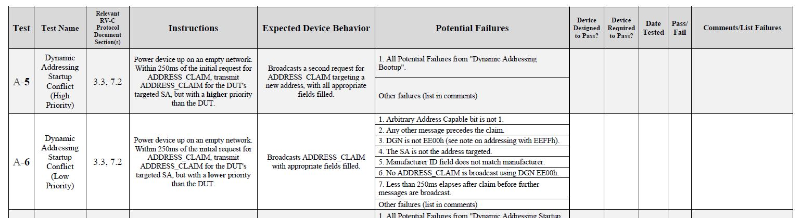

Welcome to RCT - the RV-C Compatibility Tester
What is RCT For?
RCT is for designers and manufacturers of RV-C components to ensure that their products are compatible with other RV-C components.
The Importance of Compatibility Testing
RV-C is a complex protocols and implementing it successfully requires both perfect understanding of the protocol intent and perfect accuracy in your code.
Mistakes can do more than impair your own product - they can take down the entire network. Your product can work 100% reliably in your lab - but that doesn't guarantee anything about how it works in a real RV.
Proper testing requires using reference devices built on an independent platform - not your own. And tests should have three key properties.
- Tests should be designed with a "hacker's mentality", attacking potential weaknesses rather than demonstrating strengths.
- The collection of tests should cover all possible incompatibilities.
- The tests should be repeatable, tester-independent, and produce a readable report.
Just putting the product in an RV and running it for a while isn't enough. If in the course of your testing your engineers are praying that it works - that isn't really testing. In a real test, your test engineer should be aiming to make it fail and be just a little bit peeved when he doesn't break it.
Why Use an Automated Tool
Let's see how RCT lines up with the requirements of a proper testing regimen.
- Hacker's Mentality - RCT is written to be an attack dog.
- Complete Coverage - RCT covers 100% if the operations and failure modes listed in the official RVIA procedures.
- Repeatable - RCT tests can be repeated reliably and with precision timing.
- Tester-Independent - RCT doesn't rely on the test engineer to do anything but follow simple instructions.
- Readable Reports - At the end of the process, RCT provides full reports - including not just the pass/fail results but detailed data logs.
RCT even provides a summary report that consolidates all the results for a device in a single document.
But RCT's biggest benefit - it's fast. Most tests take just seconds and are so simple to execute, anyone can run them.
The RVIA Tests
RCT is based on the official RV-C Test Procedures, published by the RVIA (https://www.rvia.org/rv-c/rv-c-testing-procedure-document)
How the RVIA Writes Tests
The tests are written by a special subcommittee of the RV-C Technical Committee. This committee consists of vendors and OEMS with an interest in the reliability of RV-C networks. If you wish to join this important committee, contact the RVIA.
The document is updated regularly, and updates can be tracked at https://www.rvia.org/rv-c. You do not have to be a member of the committee to propose additions or amendments. More information on the process is here https://www.rvia.org/rv-c/guide-rv-c-amendment-process.
RCT and the RVIA Forms
Here is a section from the Testing Procedures document.

Here is the output from a specific RCT test.
================================================================================
Starting Test : A40 10-2025 Dynamic Addressing Bootup
Setting Omniscope to Tools
Start with an empty network, DUT powered off or disconnected.
Power Up DUT
Test A40 complete.
================================================================================
External testing cannot detect all possible bugs and failures.
The results of this test shall not be interpreted as a certification or endorsement by any party.
Passing these tests is not an absolute guarantee of RV-C compatibility or interoperability with other RV-C devices.
================================================================================
Test : A40 [10-2025] Dynamic Addressing Bootup
Code Version : Revised 11-04-2025 Compiled Dec 15 2025
Test Date/Time : Monday, December 15, 2025 11:25:03
Test Profile : C:\Temp\TestProfile_3.ocf
Company : Rabblefish LLC
Product Name : RG150
Product Version : 1.03
Tested By : Martin Perlot
Testing Notes : Tested on prototype hardware.
DSA Category = Appliances and Bridges
--------------------------------------------------------------------------------
PASS : Request does not use SA FEh
PASS : Request target is outside the device's dynamic range.
PASS : Another message precedes the request.
PASS : The request payload is not 8 bytes.
PASS : The requested DGN is not EE00h.
PASS : A global request for ADDRESS_CLAIM is transmitted.
PASS : The device attempts to claim multiple addresses.
____ : Logs have been examined for other possible failure modes.
--------------------------------------------------------------------------------
--------------------------------------------------------------------------------
Log size : 3 msgs
6.144 18EAD9FE REQUEST [D9] 0EAD9:FE 00 EE 00 FF FF FF FF FF
~~DGNRequest [217]=EE00
6.243 18EE00D9 ADDRESS_CLAIMED 0EE00:D9 47 53 DF 0E 33 FF 00 80
6.993 19FDE6D9 CAN_BUS_STS 1FDE6:D9 04 FF FF FF FF 10 F1 FF
--------------------------------------------------------------------------------
and here is a Summary Report showing a product's progress through the testing regimen.
--------------------------------------------------------------------------------
Product : RG150 1.03
Report Date/Time : Monday, December 15, 2025 11:55:56
RCT Compile : Dec 15 2025
--------------------------------------------------------------------------------
A10 Static Addressing Bootup SKIPPED!!!
Device Not Designed to Pass
A20 Static Addressing - Lower Priority Conflict SKIPPED!!!
Device Not Required by OEM to Pass
A40 Dynamic Addressing Bootup
Spec Version: [10-2025] Code Version: 11-04-2025
Monday, December 15, 2025 11:25:03 (2512151124)
Tested on prototype hardware.
DNP : 0 ____ : 1 PASS : 7
A50 Dynamic Addressing Startup Conflict (High Priority) SKIPPED!!!
Waiting for New Software
A90 Dynamic Addressing Subsequent Conflict (High Priority)
Spec Version: [9-2025] Code Version: 10-13-2025 !!! Current: 10-2025 11-13-2025 !!!
Monday, December 08, 2025 10:11:01 (2512081010)
DNP : 2 ____ : 0 PASS : 12 IGNORE : 1 OK : 1
--------------------------------------------------------------------------------
A10 Skipped: Device Not Designed to Pass
A20 Skipped: Device Not Required by OEM to Pass
A40 DNP : 0 ____ : 1 PASS : 7
A50 Skipped: Waiting for New Software
A90 DNP : 2 ____ : 0 PASS : 12 IGNORE : 1 OK : 1
--------------------------------------------------------------------------------
The Summary Report is designed to correlate closely to the RVIA document - the primary difference is that it does not attempt to describe the test procedure, only the results. We expect that most customers will be satisfied to see this report, but if not, the text can be cut-and-pasted into the RVIA's PDF file.
How to Perform a test
It couldn't be much easier. The first step is to create a profile to describe the product - its name and version, the company and tester. Then, for any particular test there may be details that need to be defined. For example, some address-claiming tests must know the product's Manufacturer ID to verify the ADDRESS_CLAIMED data is correct. Then running a test is (usually) just a matter of having Omniscope and the DUT (Device Under Test) connected on a network and selecting the test from the menu. RCT provides instructions as the test proceeds.
The first section in the test log shows the process step-by-step.
================================================================================
Starting Test : A40 10-2025 Dynamic Addressing Bootup
Setting Omniscope to Tools
Start with an empty network, DUT powered off or disconnected.
Power Up DUT
Test A40 complete.
================================================================================
In this example, the tester selected Test - A-Addressing - A40: Dynamic Addressing Bootup. RCT responded by clearing the logging area and typing:
================================================================================
Starting Test : A40 10-2025 Dynamic Addressing Bootup
Setting Omniscope to Tools
Start with an empty network, DUT powered off or disconnected.
At this point, RCT waits until is sees that the network is completely empty. Once the network is clear, it continues, typing:
Power Up DUT
At this point, RCT waits until you connect the device or power it up. In this particular test, it will process for a few seconds and then report:
Test A40 complete.
================================================================================
It then generates the rest of the report. The report includes
- The interactive log created during the test.
- An important reminder that no test can root out every possible failure.
- All the profile data used in the test, plus a spot to add your own notes.
- The list of failure modes. For each mode, one of three results are possible. In most cases a reference to the data log is provided.
- DNP - Do Not Pass. RCT has detected a failure.
- PASS - Pass. RCT has determined that the product has avoided that failure.
- ___ - Contingent on User Inspection. Some failures cannot be fully evaluated automatically. The tester is required to analyze the log to evaluate success.
- The data log(s). This may show all the activity on the network, or may be filtered to specific devices or DGNs. Each message is timestamped and important messages are parsed for easy interpretation.
The final step is to edit the log, replacing the ____ values with appropriate codes and entering any desired notes. Most tests take just a few seconds to perform and a little longer to evaluate.
Your Resposibilities
No test regimen is perfect, but with your help we can continuously improve the RV-C specification and the RCT program.
Keep Your Eyes Open
RCT has one significant problem - it's too fast and easy! It is so fast, it's easy to get complacent and miss seeing the occasional quirk or detail. Sometimes your product will pass a test just because it was lucky - this is especially true with any tests involving timing. We recommend running every test at least a couple times and to not consider a test passed unless all failures you detected along the way have been explained.
Help Perfect the Specification
It may be the case that your product passes every test in RCT and still fails in the field. The RVIA tests are written by humans whose imaginations are not infinite - you can't expect them to think of every possible failure mode or problematic interaction between products. When you discover such a failure, do yourself and the industry a favor and let us know. If you can describe the failure, and ideally, how to make that failure appear reliably - together we can devise a test to eliminate it.
Help Perfect the Tool
RCT was also written by humans and it may have bugs in it as well. Please report even the most trivial bugs - behind what seems a minor glitch might be a fatal error.
Who to Contact
To report issues with the RCT package, e-mail tech@trilliumelectronics.com. If the problem is with a specific test, run the test in Verbose mode and include the log with your e-mail.
To report issues with the RV-C specification, e-mail RV-C-Administrator@rvia.org, and copy tech@trilliumelectronics.com.